2.3.1
정렬 알고리즘
- 정렬 문제의 정의, 각종 정렬
정렬 알고리즘
- 정렬
- 안정성 : 같은 key값끼리의 위치가 역전되지 않음
- 제자리 정렬 : 입력 n 이외에 다른 추가 메모리 공간 필요 X
| 평균 | 최선 | 최악 | 안정성 | 제자리 정렬 | |
|---|---|---|---|---|---|
| 삽입 정렬 | O(n²) | O(n) | O(n²) | O | N |
| 버블 정렬 | O(n²) | O(n²) | O(n²) | O | N |
| 선택 정렬 | O(n²) | - | - | X | N |
| 합병 정렬 | O(n log n) | - | - | O | N + N |
| 퀵 정렬 | O(n log n) | O(n log n) | O(n²) | X | N (+stack) |
| 힙 정렬 | O(n log n) | - | - | X | N (+pointer) |
| 기수 정렬 | O(dn) | - | - | O | N |
- 정렬 기법의 기초
- 공부할 것 : 정렬마다 처리과정, C 구현, 장단점 비교(성능) — O(n²)이 기본 성능, O(n log₂n)이면 좋은 성능
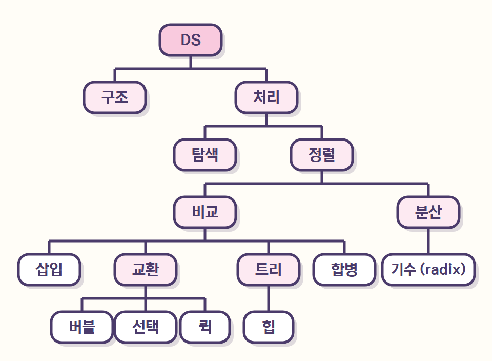
- 내부 정렬 : 주기억장치 이용
- 외부 정렬 : 보조기억장치 이용
- 비교에 의한 정렬 : 두 개씩 비교해서 교환 (삽입, 버블·선택·퀵, 힙, 합병)
- 분산에 의한 정렬 : 여러 개 부분집합으로 나눠 집합끼리 사이즈 정렬 (흩어 놓고 모으기, ex. 기수 정렬 radix sort)
- 위 표 보충
- 안정성 : 같은 키값의 위치가 역전되지 않음 — 인접한 것끼리 비교·교환하면 같은 키값끼리 순서가 바뀔 일이 없다
- 버블 정렬 최선 O(n) : flag bit 로 매 단계에서 확인해 교환이 발생하지 않으면 정렬된 것으로 간주할 때
- 퀵 정렬 최악 O(n²) : 정렬된 데이터나 역순의 데이터 = 피봇이 가장 작은 값이나 가장 큰 값을 가져서 균등 분할이 안 될 때
- 퀵 정렬 N(+stack) : stack 은 수행시간에 영향 X
- 힙 정렬 N(+pointer) : 트리로 구성할 때
- 합병 정렬 N+N : 진정한 제자리 정렬 X
- 기수 정렬 평균 : O(d(n+r)) (d: 자리수, r: 진수)
- 공부할 것 : 정렬마다 처리과정, C 구현, 장단점 비교(성능) — O(n²)이 기본 성능, O(n log₂n)이면 좋은 성능
- 삽입 정렬
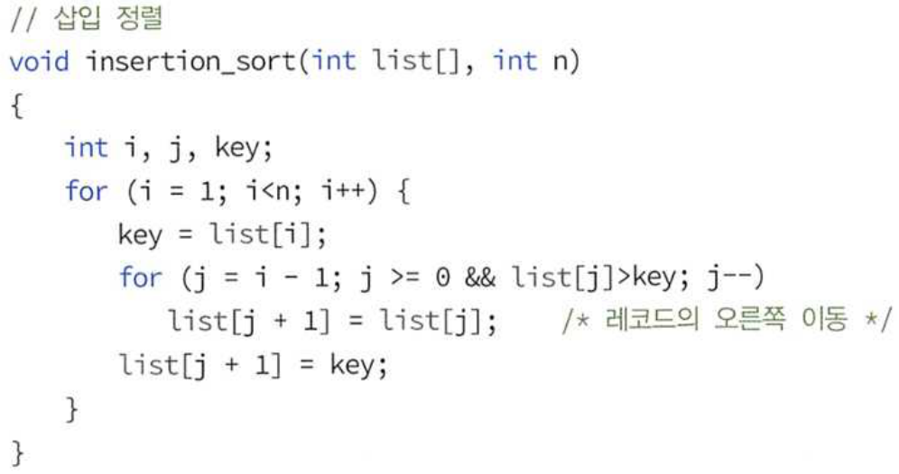
![void insertion_sort(int list[], int n) 코드: i = 1 부터 key = list[i], j = i-1 부터 list[j] > key 인 동안 list[j+1] = list[j] 로 오른쪽 이동, 마지막에 list[j+1] = key](2-3-1-fig-3.png)
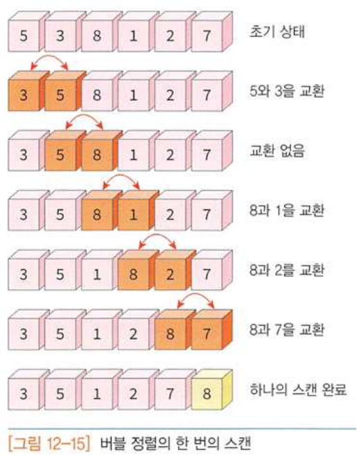
- 삽입 정렬 : 가장 간단한 정렬. 모든 레코드가 이미 정렬된 순서로 되어 있다고 가정하고, 정렬된 순서대로 적당한 위치를 찾아 그곳에 새로운 레코드를 삽입
- 코드 풀이
![InsertionSort 코드 손글씨 풀이: 현재 정렬된 배열은 i-1까지이므로 j=i-1부터 역순으로 조사하고, insert_key가 list[j]보다 작으면 뒤로 보낸 뒤 for문 밖에서 list[j+1]에 삽입한다. 아래 그림은 정렬된 데이터 1 2 3 5 6 뒤에 삽입할 값 4가 들어가는 모습.](2-3-1-fig-5.png)
- 다른 구현 (a[1..n] 사용, a[0]에 삽입할 값을 넣어 둠)
| void insertionS(element a[ ], int n) { int j; for(j=2; j <= n; j++) { element temp = a[j]; insert(temp, a, j-1); } } void insert(element e, element a[ ], int i) { a[0] = e; while(e.key < a[i].key) { a[i+1] = a[i]; i--; } a[i+1] = e; } |
- 처리과정 : k번째 위치한 키를 앞의 (k-1)개의 키와 비교해 삽입할 위치를 찾아 삽입
- 새 레코드 하나가 삽입될 때마다 삽입된 위치 이후의 레코드들은 한 레코드씩 뒤로 이동
| 단계 | 배열 (] 앞이 정렬된 부분) | 비교 |
|---|---|---|
| <초기> | 5 ] 4 3 2 1 | |
| <1단계> | 4 5 ] 3 2 1 | 4 삽입, 1번 비교 |
| <2단계> | 3 4 5 ] 2 1 | 3 삽입, 2번 비교 |
| <3단계> | 2 3 4 5 ] 1 | 2 삽입, 3번 비교 |
| <4단계> | 1 2 3 4 5 ] | 1 삽입, 4번 비교 |
- 성능 분석 : 평균 O(n²)
- 최상의 경우 O(n) : 이미 정렬된 상태로 입력되어 매 단계(n-1단계)마다 1번씩의 비교, 2번의 이동이 이루어짐 → 총 비교 횟수 n-1, 총 이동 횟수 2(n-1) ⇒ O(3n-3) = O(n)
- 최악의 경우 O(n²) : 자료가 역순일 경우, 각 단계에서 앞에 놓인 자료들은 전부 한 칸씩 뒤로 이동해야 함
- 외부 루프의 반복마다 i번의 비교 → 총 비교 횟수 Σi = 1+2+…+(n-1) = n(n-1)/2 = O(n²)
- 외부 루프의 반복마다 i+2번의 이동 → 총 이동 횟수 Σ(i+2) = n(n-1)/2 + 2(n-1) = (n²+3n-4)/2 = O(n²)
- ※ 보간법 : 키 k와 a[i]를 비교, 리스트가 정렬됐을 때만 사용 가능
- i = ((k − a[1].key) / (a[n].key − a[1].key)) × n (a[n].key: 리스트에서 가장 큰 키값, a[1].key: 가장 작은 키값) 원본과 다름 · 원본: “(k − a[i].key) / a[n].key − a[l].key”, 분자도 가장 작은 키값을 빼고 분모는 괄호로 묶어야 함
- 스터디 문제 (2022 공무원 7급) : 연결 리스트로 삽입 정렬 함수 구현, ㉠~㉤에 들어갈 코드 고르기

- 쉘 정렬 : 삽입 정렬을 발전시킨 것 (어느 정도 정렬된 상태에서 삽입 정렬)
- 처리 과정
- ① 정렬해야 할 리스트를 일정한 기준에 따라 분류하여 연속적이지 않은 여러 개의 부분 리스트를 만듦 (주어진 리스트에서 간격 k번째 요소를 추출 — 간격은 보통 홀수인 것이 더 효율적)
- ② 각 부분 리스트를 삽입 정렬을 이용하여 정렬
- ③ 다시 전체 리스트를 더 적은 개수의 부분 리스트로(간격 보통 n/2) 만든 후 알고리즘 되풀이 (부분 리스트의 개수가 1이 될 때까지)
- 성능 : 시간 복잡도 평균 O(n^1.5), 최악 O(n²)
- 장점 (삽입 정렬에 비해)
- 연속적이지 않은 부분 리스트에서 자료 교환이 일어나면 삽입 정렬보다 더 큰 거리를 이동 ∴ 교환되는 원소들이 삽입 정렬보다 최종 위치에 더 가까이 있을 가능성이 높음
- 부분 리스트가 어느 정도 정렬된 상태라서, 부분 리스트의 개수가 1이 되면 거의 정렬된 리스트에 삽입 정렬하는 것과 유사
- 진행 예 (간격 5 → 3 → 1)

- 코드
- 처리 과정
| // gap 만큼 떨어진 요소들을 삽입 정렬 // 정렬의 범위는 first에서 last inc_insertion_sort(int list[], int first, int last, int gap) { int i, j, key; for (i = first + gap; i <= last; i = i + gap) { key = list[i]; for (j = i - gap; j >= first && key<list[j]; j = j - gap) // 삽입 정렬 list[j + gap] = list[j]; list[j + gap] = key; } } // void shell_sort(int list[], int n) // n = size { int i, gap; for (gap = n / 2; gap>0; gap = gap / 2) { if ((gap % 2) == 0) gap++; // 짝수면 홀수로 for (i = 0; i<gap; i++) // 부분 리스트의 개수는 gap inc_insertion_sort(list, i, n - 1, gap); } } |
- 버블 정렬


![#define SWAP(x, y, t) 와 void bubble_sort(int list[], int n) 코드: i = n-1 부터 1 까지, j = 0 부터 i-1 까지 list[j] > list[j+1] 이면 SWAP](2-3-1-fig-10.png)
- 버블 정렬 : 가장 오래 걸리는 방식 (순서에 맞지 않는 요소를 인접한 요소와 교환하기 때문). 바로 인접해 있는 두 레코드의 키값을 비교하여 순서가 바뀌어 있으면 두 레코드 위치 교환 (인접 교환)
- n개면 n-1단계 수행 (매 단계 맨 뒤 데이터는 정렬에서 제외)
- 인접 교환, 안정적, 제자리 정렬
- 코드와 기출 의사 코드
- 안쪽 반복은 j < n-1-i 까지 돌아야 Key[j+1] 이 배열 안에 있다 원본과 다름 · 원본: “j<n-i”, i=0 일 때 Key[n] 까지 비교해 배열 범위를 넘음
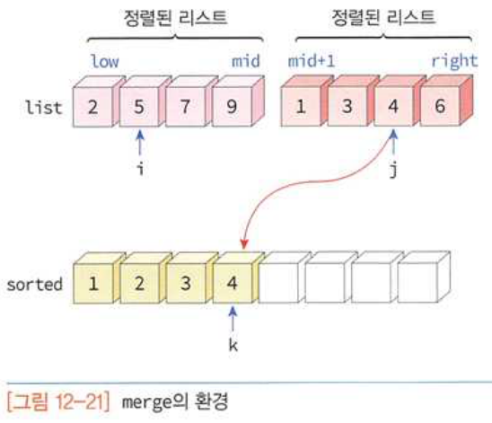
- 처리과정
![버블 정렬 처리과정 손글씨 표: 왼쪽은 n=4일 때 i가 0~3으로 늘 때 j가 3, 2, 1, 0까지 도는 모습. 오른쪽은 A=[38, 26, 7, 15, 19]를 기출 의사 코드로 정렬하며 i=5부터 2까지 단계마다 배열이 바뀌어 7 15 19 26 38이 되는 과정.](2-3-1-fig-12.png)
- 성능 분석 : 평균 수행시간 O(n²)
- 비교 횟수 : 최선·최악·평균 모두 동일, Σ(i=1~n-1) i = n(n-1)/2 = O(n²)
- 이동 횟수
- 최상 : 초기 레코드 배열이 정렬된 순서로 주어진 경우 → 자료 이동이 한 번도 발생하지 않음
- 최악 : 초기 레코드 배열이 역순으로 주어진 경우 → 비교 횟수 × 3 (∵ SWAP 이 3개의 이동을 포함하기 때문)
- 평균 : 자료 이동이 0~i까지 같은 확률로 일어남 ⇒ O(n²)
- 개선 : 매 단계 교환 발생 여부 검사 — 교환이 없으면 이미 전체 정렬이 끝난 것이므로 종료 (하나의 플래그 비트로 정렬 완료 여부 표시)
- 선택 정렬

![void selection_sort(int list[], int n) 코드: i 마다 least = i, j = i+1 부터 n-1 까지 최소값 탐색 후 SWAP(list[i], list[least], temp)](2-3-1-fig-14.png)
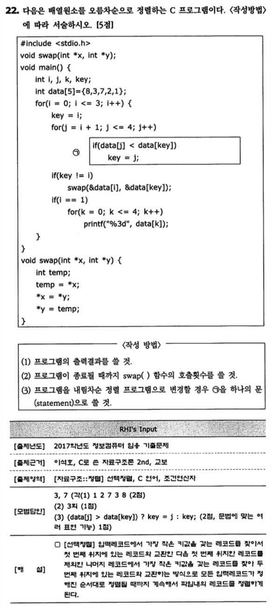
- 선택 정렬 (=위치 교환 방식) : 입력 레코드에서 가장 작은 키 값을 갖는 레코드를 찾아 첫 번째 위치 레코드와 교환, 나머지 레코드 중에서 가장 작은 키 값을 갖는 레코드를 찾아 두 번째 위치 레코드와 교환 (오른쪽이 공백 상태일 때까지 되풀이)
- 왼쪽 : 정렬이 완료된 레코드들 / 오른쪽 : 정렬되지 않은 레코드들
- 안정성 X : 먼 거리에서 교체하는 레코드들은 안정성 보장이 어려움 (ex. 1 3ᵃ … 3ᵇ 2 에서 3ᵃ와 2가 바뀌면 3ᵇ가 3ᵃ보다 앞에 옴)
- 제자리 정렬 O, 위치 교환
- SELECT_SORT 코드 풀이
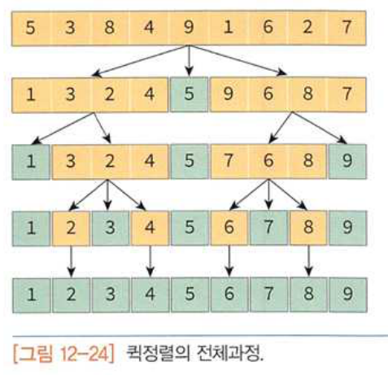
- 성능
- 비교 횟수 : O(n²)
- 교환 횟수 : 교환은 매 단계 끝날 때만 1번 → 많아야(역순이어야) O(n-1) = O(n)
- 교환 횟수 = 외부 루프 실행 횟수, 한 번 교환하려면 3번 이동이 필요 → 전체 이동 횟수 3(n-1)
- 2017 기출 변형
![2017 기출 변형 38번: data[8]={4, 7, 3, 1, 5, 8, 2, 6}을 선택 정렬하는 C 프로그램. i==3일 때 출력 1 2 3 4 5 8 7 6, swap 호출 3번, 내림차순이면 key = (data[j] > data[key]) ? j : key; 손글씨로 i=0~7 단계별 배열 변화를 적었다.](2-3-1-fig-17.png)
- 합병 정렬
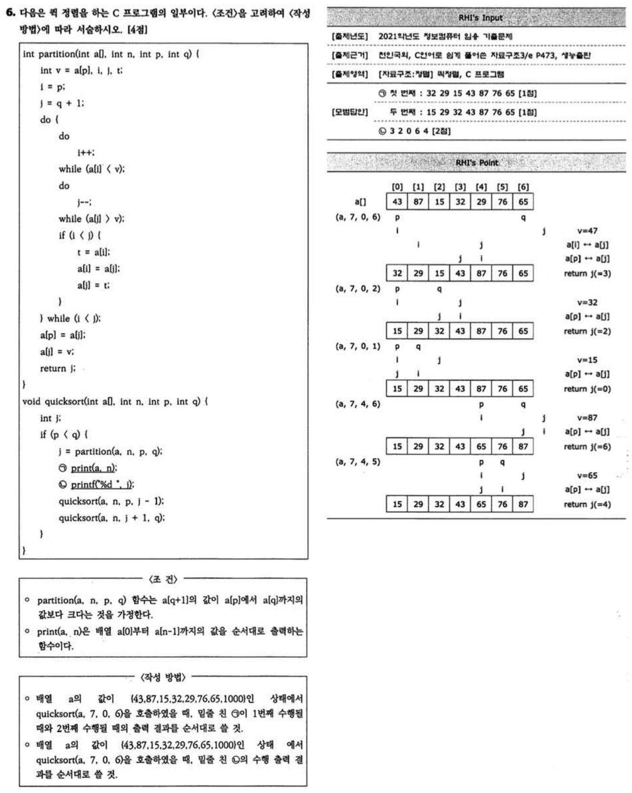

![void merge(int list[], int left, int mid, int right) 코드: i 는 왼쪽, j 는 오른쪽, k 는 sorted 인덱스. 분할 정렬된 list 를 합병하고, 남아 있는 레코드를 일괄 복사한 뒤 sorted[] 를 list[] 로 재복사](2-3-1-fig-20.png)
![void merge_sort(int list[], int left, int right) 코드: left < right 이면 mid = (left + right) / 2 로 균등 분할, 두 부분 리스트를 각각 merge_sort 한 뒤 merge](2-3-1-fig-21.png)
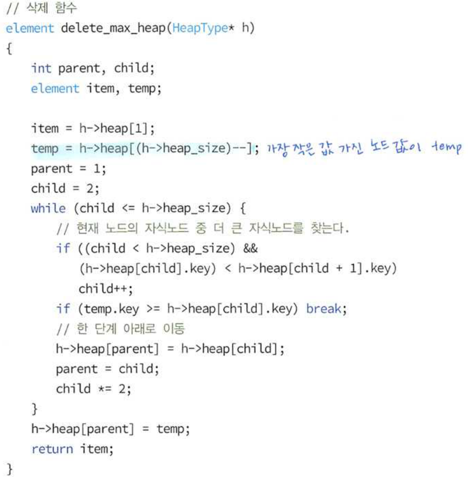
- 합병 정렬 : 하나의 리스트를 균등한 크기로 분할하고 분할된 부분 리스트를 정렬한 다음, 리스트를 합하여 전체가 정렬된 리스트를 얻음 (대개 순환 호출 이용)
- ① 분할 : 입력 배열을 같은 크기의 2개의 배열로 분할
- ② 정복 : 부분 배열을 정렬 (부분 배열의 크기가 충분히 작지 않으면 순환 호출을 이용해 다시 분할 정복 기법 적용)
- ③ 결합 : 정렬된 부분 배열들을 하나의 배열에 통합 (합병 시에도 합병 정렬을 순환적으로 적용)
- 반복 합병 정렬
- ① 입력 리스트를 길이가 1인 n개의 정렬된 서브리스트로 간주
- ② 리스트들을 쌍으로 합병하여 크기가 2인 n/2개의 리스트를 얻음
- ③ 리스트들을 쌍으로 합병하여 크기가 4인 n/4개의 리스트를 얻음 …
- ④ 하나의 서브리스트가 남을 때까지 계속
- mergePass 의 n : 리스트 요소 개수, s : 정렬된 각 세그먼트의 사이즈
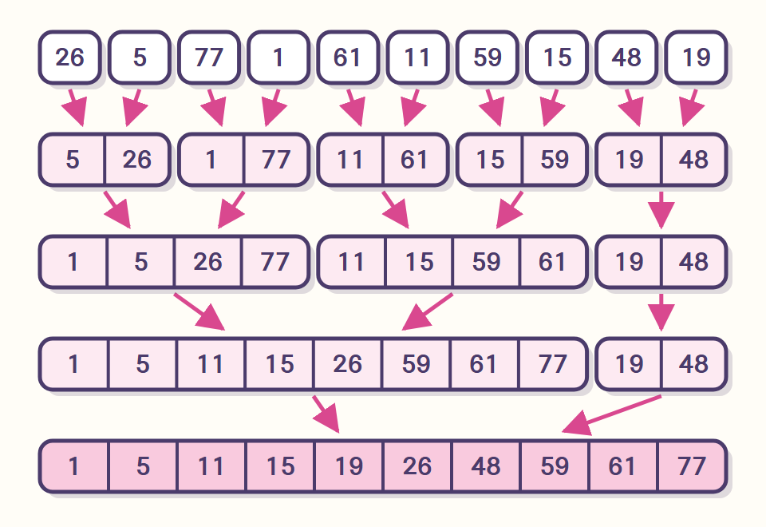
| void mergePass(element initList[], element mergedList[], int n, int s) {/* perform one pass of the merge sort, merge adjacent pairs of sorted segments from initList[] into mergedList[], n is the number of elements in the list, s is the size of each sorted segment */ int i,j; for (i = 1; i <= n - 2 * s + 1; i += 2 * s) merge(initList,mergedList,i,i + s - 1,i + 2 * s - 1); if (i + s - 1 < n) merge(initList,mergedList,i,i + s - 1,n); else for (j = i; j <= n; j++) mergedList[j] = initList[j]; } void mergeSort(element a[], int n) {/* sort a[1:n] using the merge sort method */ int s = 1; /* current segment size */ element extra[MAX_SIZE]; while (s < n) { mergePass(a, extra, n, s); s *= 2; mergePass(extra, a, n, s); s *= 2; } } |
- 순환 합병 정렬 → 분할 정복 알고리즘
- ① 분할 : 정렬할 리스트를 거의 똑같이 2개로 나누어 left 서브리스트와 right 서브리스트로 만듦
- ② 정복 : 서브리스트들은 순환적으로 정렬됨
- ③ 합병 : 정렬된 서브리스트들을 합병 → 두 리스트의 요소들을 처음부터 하나씩 비교하여 더 작은 요소를 새로운 리스트로 옮김. 둘 중 하나의 리스트가 먼저 끝나면 나머지 리스트 요소들을 전부 새로운 리스트로 복사

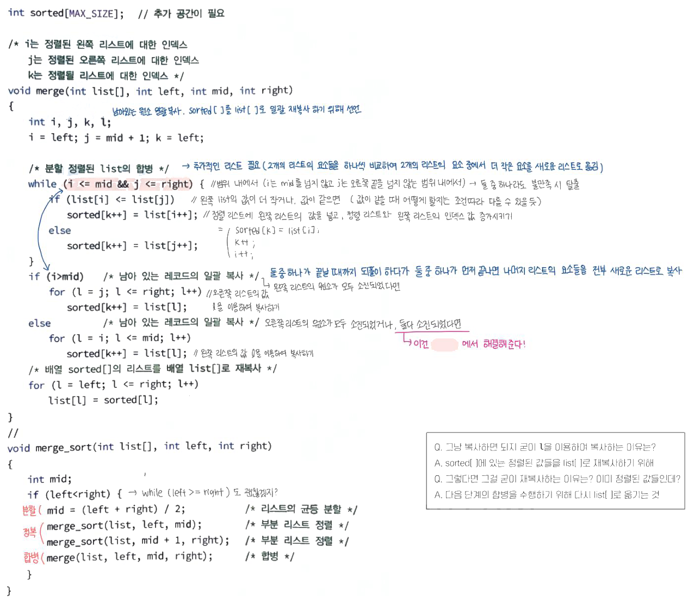
- 복잡도 분석
- 비교 연산 : 하나의 합병 단계에서 최대 n번 비교, 합병 단계 수 k = log₂n → 총 비교 연산 n log₂n ⇒ O(n log₂n)
- 이동 연산 : 하나의 합병 단계에서 2n번 (임시 배열에 복사했다가 다시 가져와야 하므로), 합병 단계 log₂n → 총 이동 연산 2n log₂n ⇒ O(n log₂n)
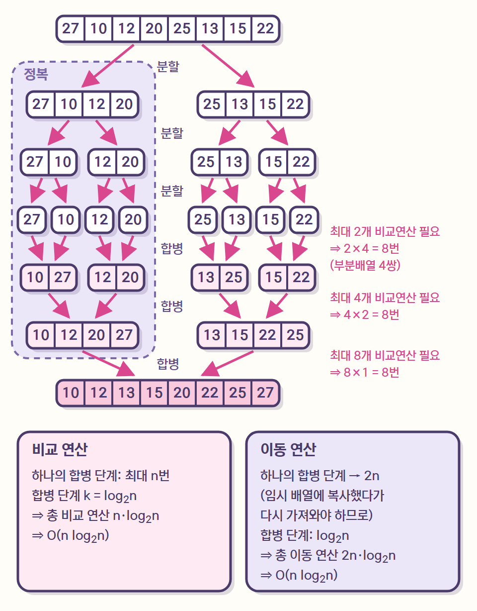
- 장점 : ① 안정적 ② 데이터 분포에 영향을 적게 받음 → 최선·최악·평균 모두 O(n log₂n)
- 단점 : ① 임시 배열 필요 ② 레코드들의 크기가 큰 경우 이동 횟수가 많으므로 큰 시간적 낭비 초래 (→ 연결 리스트를 사용하면 효율적)
- 퀵 정렬
- Q) 분할이 이루어지면 pivot값은, pivot값보다 더 작은 서브배열과 pivot값보다 더 큰 서브배열, 2개의 서브배열의 중간에 위치하게 된다. 이 pivot값의 위치는 다음 단계가 진행되었을 때 변경이 되는가? 아니면 되지 않는가?
- Sol) pivot값 위치 변경되지 않는다. pivot은 자기 위치를 찾은 것임.
- if pivot이 위치를 움직이게 되면, 왼쪽이 작은 거 / 오른쪽이 큰 거 규칙이 다 무너지기 때문에 pivot값은 한 번 위치를 정하면 끝까지 간다
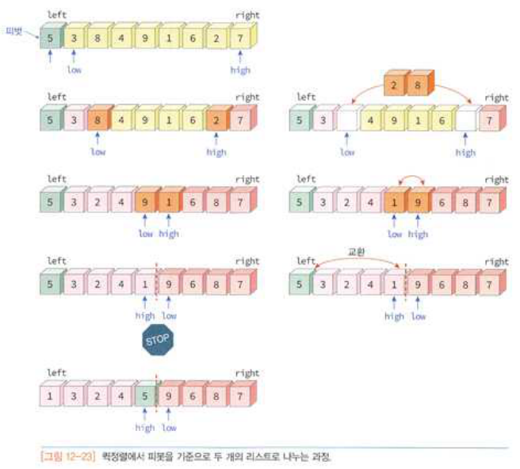

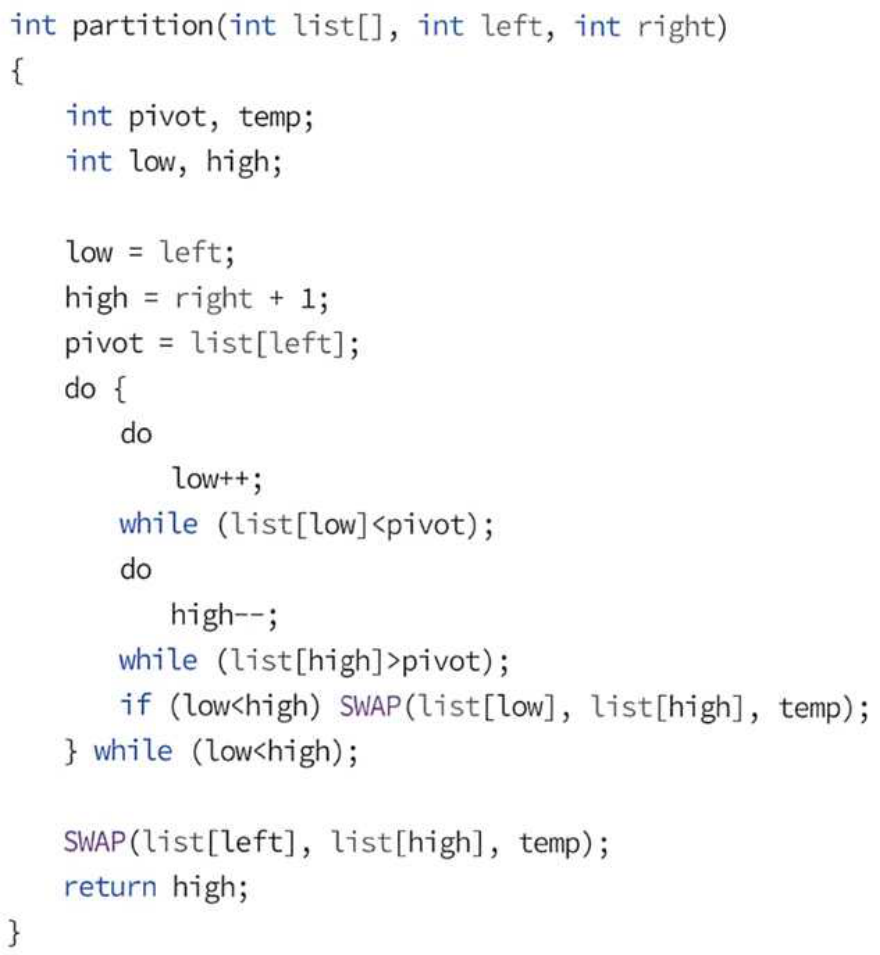

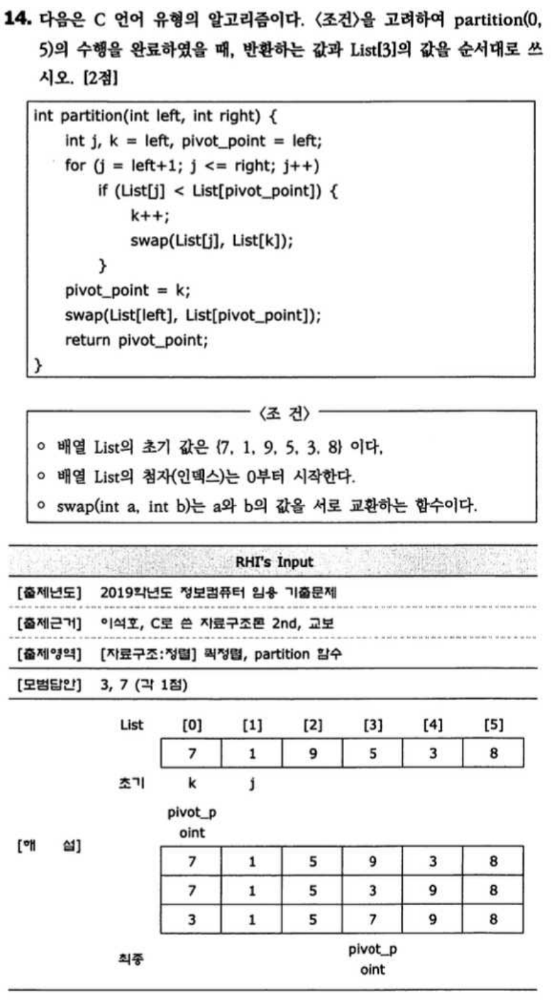

- 퀵 정렬 특징
- 가장 좋은 평균 성능
- 순환을 통해 대상 분할 (피봇에 따라 균등 분할이 되기도, 아니기도 함)
- 안정적 X, 제자리 정렬 O (stack 이 필요하긴 함)
- 성능
- 최선 O(n log n) : 매번 똑같이 절반으로 나눠지는 경우 (균등 분할) → 최대 순환 깊이가 log n 이 되어 스택 공간으로 O(log n) 필요
- 최악 O(n²) : 순환의 각 단계에서 크기가 n-1인 왼쪽 서브리스트와 크기가 0인 오른쪽 서브리스트로 나눠지는 경우 (피봇이 가장 큰/작은 값) → 순환 깊이가 n 이 되어 O(n) 스택 공간 필요
- 평균 분석 : n개 레코드를 가지는 리스트 → n/2, n/4, n/8, …, n/2ᵏ 크기로 나눠짐
- 크기가 1이 될 때까지 나눠짐 ∴ n/2ᵏ = 1 ⇒ k = log₂n 개의 패스 필요
- 각 패스에서는 전체 리스트의 대부분 레코드를 비교 → 평균 n번 비교
- ⇒ n × log₂n = n log₂n, O(n log₂n) (레코드 이동 횟수는 비교 횟수보다 작아서 무시)
- 코드
| void QUICK_SORT(int Key[], int left_pos, int right_pos) { int i, j, pivot_key, temp; i = left_pos; j = right_pos+1; pivot_key = Key[left_pos]; if(left_pos < right_pos) { do { while(Key[++i] <= pivot_key); while(Key[--j] > pivot_key); if(i < j) { temp = Key[i]; Key[i] = Key[j]; Key[j] = temp; } }while (i < j); temp = Key[left_pos]; Key[left_pos] = Key[j]; Key[j] = temp; QUICK_SORT(Key, left_pos, j-1); QUICK_SORT(Key, j+1, right_pos); } } |
- 이석호 ver
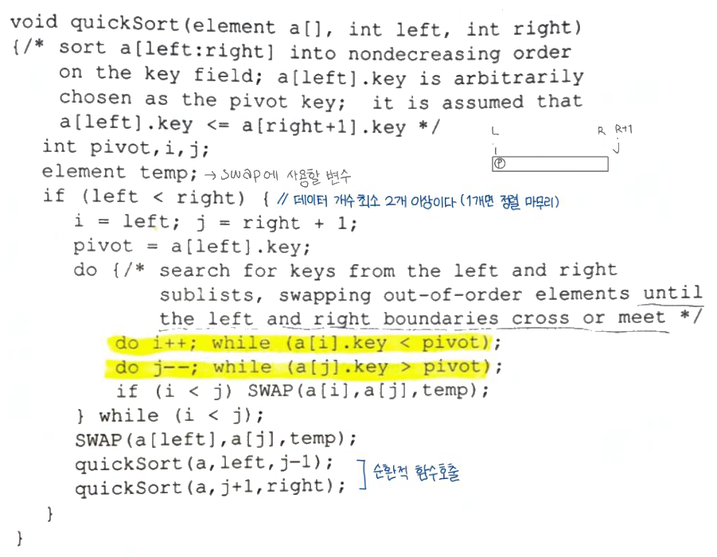
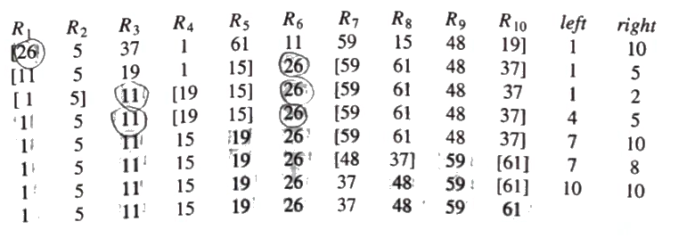
- 2003 기출 : 퀵 정렬을 기반으로 배열에서 k번째로 작은 수를 찾는 순환 프로그램
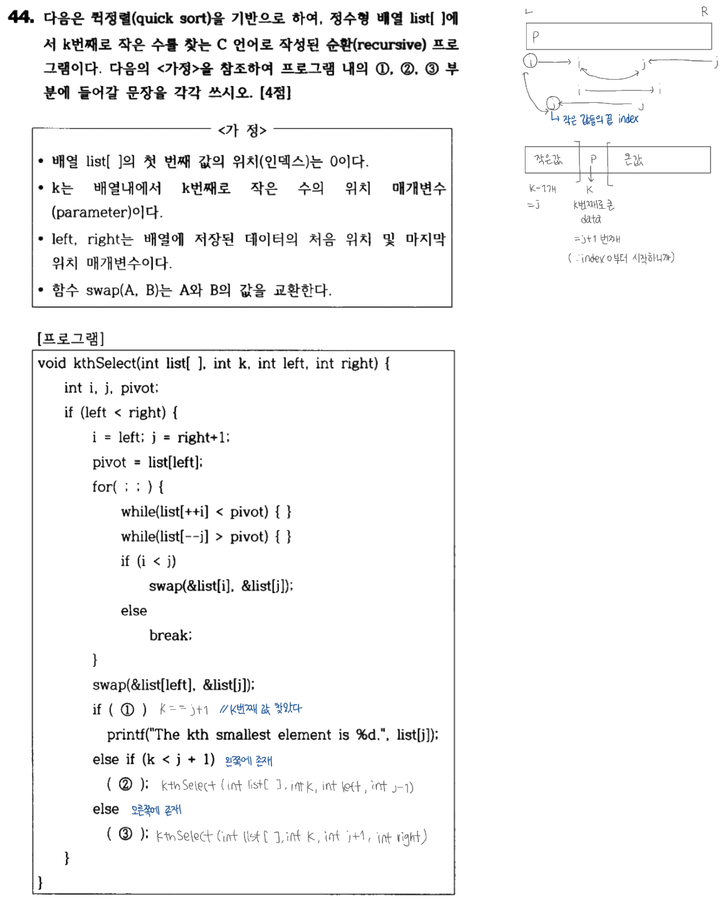
- 2007 기출 – 복잡도 계산
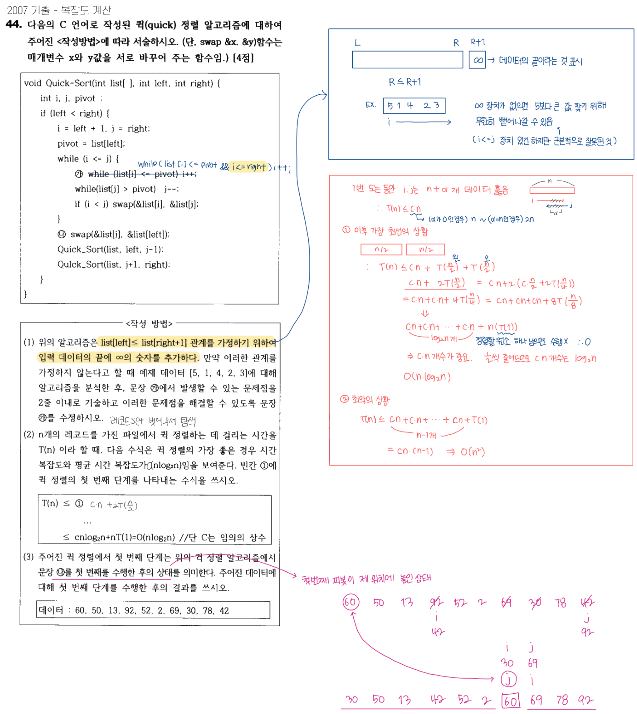
- 힙 정렬
- 힙 트리 안에 데이터 삽입 & 삭제하면서 정렬 → 새로운 배열에 옮기면 정렬 완성
- 힙 트리 삽입
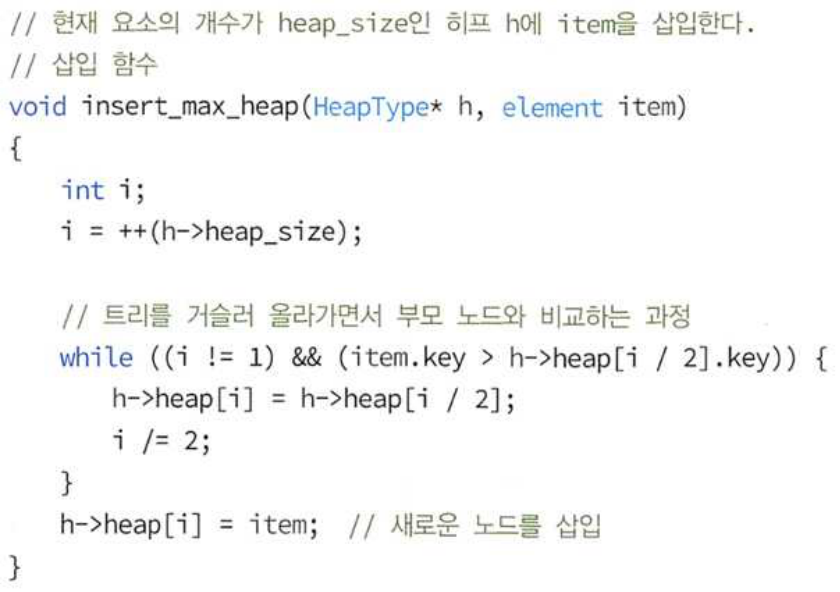
- 힙 트리 삭제
![element delete_max_heap(HeapType* h) 코드: item = heap[1], temp = heap[(h->heap_size)--] (가장 작은 값 가진 노드 값이 temp), parent = 1, child = 2 부터 더 큰 자식과 비교해 temp 가 작으면 자식을 위로 올리며 한 단계 아래로 이동, 마지막에 heap[parent] = temp, item 반환](2-3-1-fig-38.png)
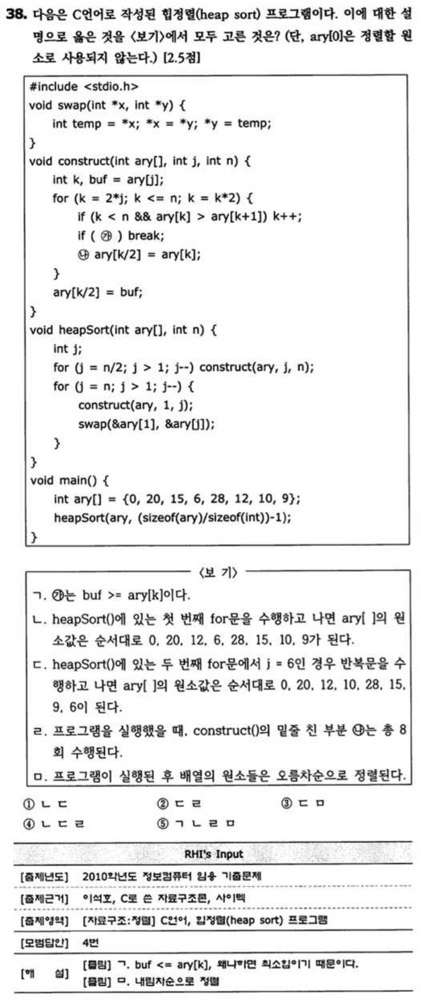
- 힙 정렬 (힙 트리 이용) → O(n log n)
- 하향식 (2*n) (힙트리는 상향식 - n/2)
- 순서 : 1) 배열값 → 2) 완전 이진트리 구성 → 3) 힙트리로 변환 → 4) 힙 정렬
- 3) 힙트리로 변환 : ① adjust (간노드 대상) — 많아야 완전 이진트리 높이 O(log₂n)
- 4) 힙 정렬 : ② swap (root & 마지막 노드) 후 전체 노드 개수 -1, adjust (root부터 재구성) → O(log₂n)
- 최대 힙의 조정 adjust → O(d) (d: 트리의 깊이) / 힙 정렬 heapSort
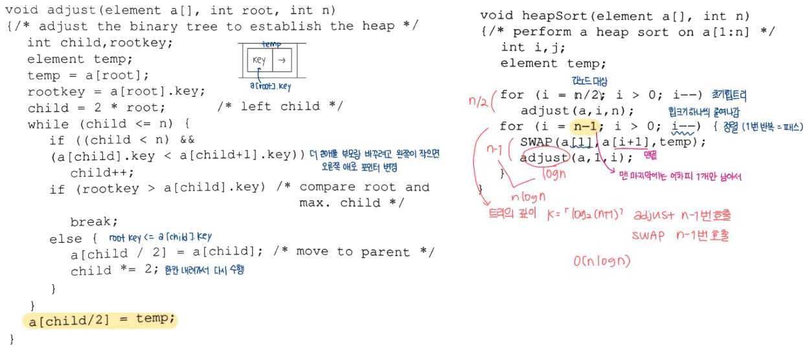
- 2010 기출
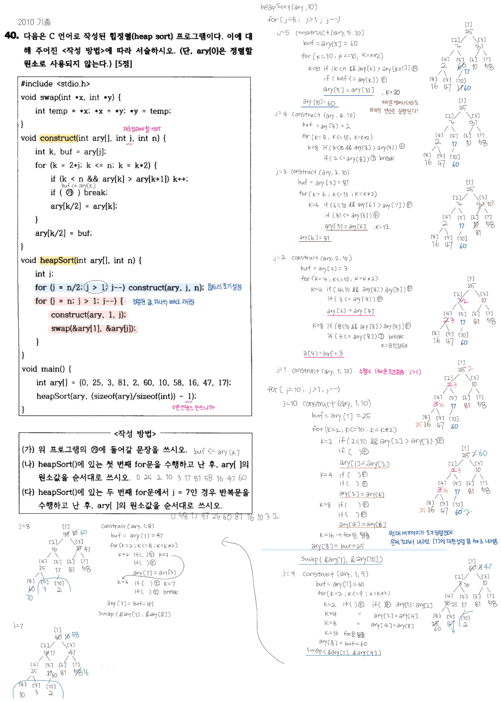
- 기수 정렬
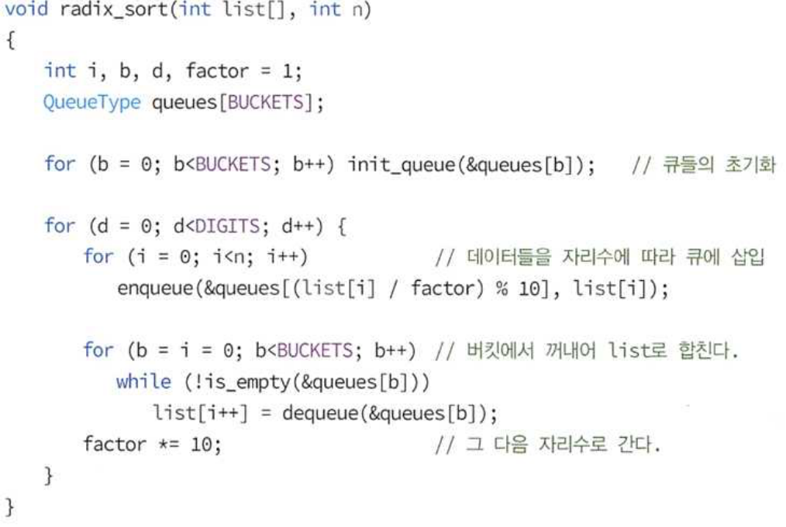
- 기수 정렬 특징
- 레코드를 비교하지 않고 정렬하는 방법
- 장점 : 레코드를 비교하지 않고 정렬하여 빠름 / 단점 : 정렬할 수 있는 레코드 타입이 한정적
- 단계 수 = 키의 자릿수 원본과 다름 · 원본: “단계수 = 데이터수”, 기수 정렬의 단계(패스) 수는 자릿수 d 와 같음
- 큐로 구현 (각각의 버킷에서 먼저 들어간 숫자는 먼저 나와야 함)
- 버킷의 개수 → 키의 표현 방법과 관련 (ex. 2진수 2개, 10진수 10개)
- 복잡도
- 키 : MSD(최상위) … LSD(최하위) 자리. n : 정렬해야 할 키 개수, d : 자리수, r : 진수 (10진수면 r = 10)
- ※ 구현의 편의를 위해 일반적으로 LSD 방식으로 함 (성능 차이 X)
- LSD → MSD 로 자리수 d만큼 반복 : ① 각 Queue 에 데이터 분산 배치 (데이터 개수 n만큼 수행) → d·n ② Queue 병합 : 데이터 재구성 (Queue 의 개수만큼 수행) → d·r
- O(dn + dr) (dn, dr 중 더 큰 값을 수행시간으로 인정) = O(d(n+r)) = O(n)
- radix_sort 가 쓰는 원형 큐
| #include <stdio.h> #include <stdlib.h> #define MAX_QUEUE_SIZE 100 typedef int element; typedef struct { // 큐 타입 element data[MAX_QUEUE_SIZE]; int front, rear; } QueueType; // 오류 함수 void error(char *message) { fprintf(stderr, "%s\n", message); exit(1); } // 초기화 함수 void init_queue(QueueType *q) { q->front = q->rear = 0; } // 공백 상태 검출 함수 int is_empty(QueueType *q) { return (q->front == q->rear); } // 포화 상태 검출 함수 int is_full(QueueType *q) { return ((q->rear + 1) % MAX_QUEUE_SIZE == q->front); } // 삽입 함수 void enqueue(QueueType *q, element item) { if (is_full(q)) error("큐가 포화상태입니다"); q->rear = (q->rear + 1) % MAX_QUEUE_SIZE; q->data[q->rear] = item; } // 삭제 함수 element dequeue(QueueType *q) { if (is_empty(q)) error("큐가 공백상태입니다"); q->front = (q->front + 1) % MAX_QUEUE_SIZE; return q->data[q->front]; } |
- 사용 예 (#define BUCKETS 10, #define DIGITS 4)
| #define SIZE 10 int main(void) { int list[SIZE]; srand(time(NULL)); for (int i = 0; i<SIZE; i++) // 난수 생성 및 출력 list[i] = rand() % 100; radix_sort(list, SIZE); // 기수정렬 호출 for (int i = 0; i<SIZE; i++) printf("%d ", list[i]); printf("\n"); return 0; } |
- 2018 기출
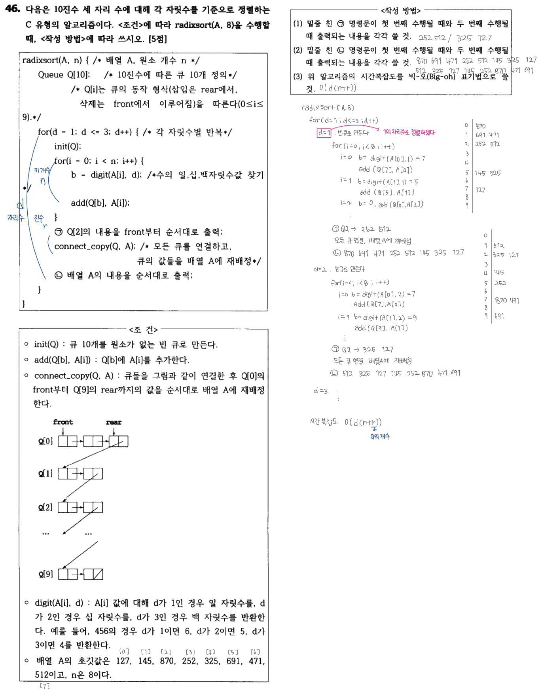
- 계수 정렬 (Count sort)
- 안정적 O
- 제자리 정렬 X (B 라는 추가 공간 필요)
- 시간 복잡도 O(n+m) (n : 원소 개수, m : 키의 범위 — 둘 중 큰 쪽)
- 기출 43번
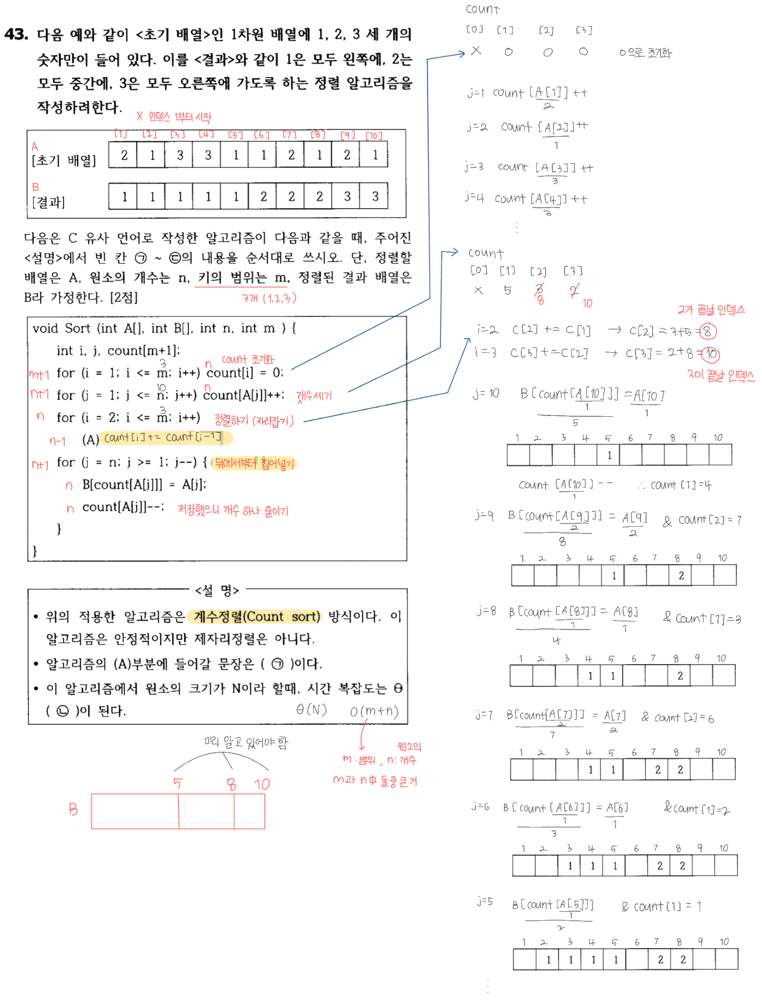